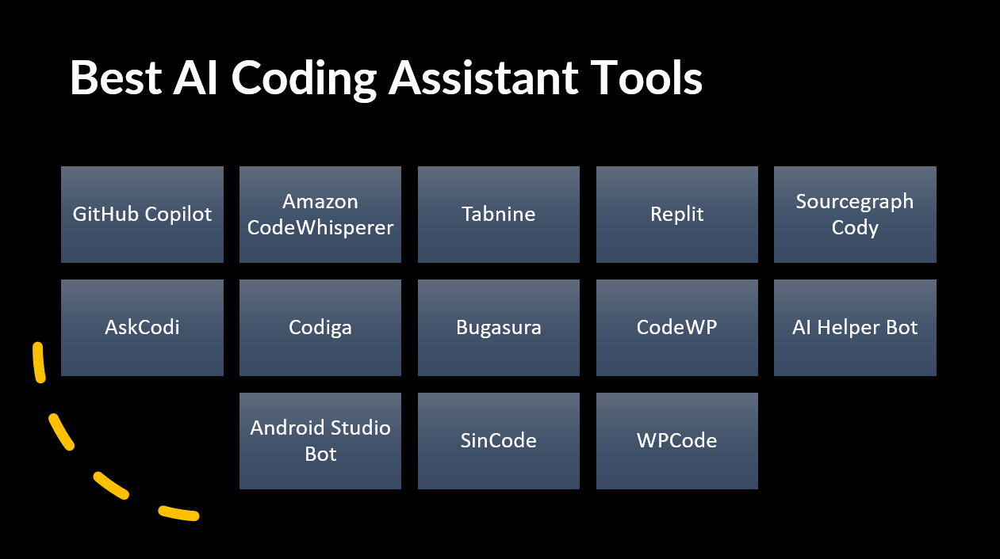

An AI coding assistant is a software tool that utilizes artificial intelligence techniques to assist developers in writing code more efficiently.
It analyzes code, programming languages, and context to provide suggestions, autocompletions, code snippets, and even generate code based on natural language prompts.
AI coding assistants aim to enhance productivity, reduce errors, and speed up the coding process by providing intelligent and context-aware assistance to developers.
They often integrate with popular Integrated Development Environments (IDEs) and offer features like code completion, error detection, refactoring suggestions, and documentation retrieval to make coding tasks more streamlined and effective.
Below are the Best AI Coding Assistant Tools:
GitHub Copilot
GitHub Copilot is one of the leading AI code assistants that is powered by OpenAI's Codex.
It can help you write code faster and more efficiently by suggesting code completions, snippets, and documentation. Copilot is available for Visual Studio Code, JetBrains IDEs, and Neovim.
Pros:
- Offers extensive language support for various programming languages
- Capable of generating code based on natural language inputs
- Seamlessly integrates with popular Integrated Development Environments (IDEs)
Cons:
- Commercial usage of the platform may incur high costs.
- Accuracy levels may vary and cannot be guaranteed at all times.
Tabnine
Tabnine is an advanced AI code assistant powered by OpenAI's Codex technology. It offers a wide array of features designed to enhance the coding experience.
Tabnine can generate code based on natural language descriptions, providing developers with a helpful tool to accelerate their workflow. It seamlessly integrates with popular Integrated Development Environments (IDEs) such as Visual Studio Code, IntelliJ IDEA, and Sublime Text, making it easily accessible to a broad range of developers.
Despite being a paid service, Tabnine's comprehensive set of features and its ability to generate code from natural language make it a valuable asset for developers seeking to boost their productivity.
Pros:
- Advanced AI assistance for code suggestions and completions.
- Seamless integration with popular IDEs.
- Free tier available for individual developers.
Cons:
- Doesn't support as many programming languages as Copilot
- Accuracy can vary, leading to occasional incorrect or suboptimal code suggestions.
- Limited customization options for fine-tuning code generation behavior.
- Paid plans can be expensive for commercial use or larger development teams.
CodeWhisperer
CodeWhisperer, powered by Amazon's LLM, is a free AI code assistant that enhances code writing speed and efficiency. It accomplishes this by providing suggestions for code completions, snippets, and documentation. CodeWhisperer is specifically designed for use with Visual Studio Code, a popular Integrated Development Environment (IDE).
Pros:
CodeWhisperer offers support for a diverse range of programming languages, making it versatile for developers working with different language ecosystems.
It has a reputation for accuracy and reliability, consistently providing helpful and relevant code suggestions.
CodeWhisperer seamlessly integrates with popular Integrated Development Environments (IDEs), ensuring a smooth and integrated coding experience.
Cons:
- CodeWhisperer is limited to users of Amazon Web Services (AWS), restricting access to those who are not utilizing AWS services.
PolyCoder
PolyCoder is an AI-powered code assistant that requires a paid subscription. It offers a wide range of features to support developers in their coding endeavors. With the ability to generate code in over 20 programming languages, PolyCoder caters to a diverse set of language ecosystems. Additionally, it provides assistance in debugging code and identifying errors, aiding developers in improving the quality of their code. PolyCoder seamlessly integrates with popular Integrated Development Environments (IDEs) such as Visual Studio Code and IntelliJ IDEA, ensuring a smooth and integrated coding experience for users of these platforms.
Pros:
- PolyCoder offers extensive language support, catering to a wide range of programming languages, enabling developers to work with their preferred language of choice.
- It has the ability to generate code based on natural language prompts, providing a convenient way for developers to express their coding needs.
- PolyCoder seamlessly integrates with popular Integrated Development Environments (IDEs), facilitating a smooth workflow and enhancing the coding experience.
Cons:
- Commercial usage of PolyCoder may come with a high price tag, making it potentially expensive for businesses or larger development teams.
- While PolyCoder strives for accuracy, it may not always deliver results as precise as some other tools, requiring users to double-check and verify generated code.
Snyk Code
Snyk Code is a free AI code assistant that can help you find and fix security vulnerabilities in your code. It is integrated with popular IDEs and code repositories, so you can use it to scan your code as you write it.
Pros:
AI coding assistants can perform code scanning to identify potential security vulnerabilities, helping developers improve the security of their code.
They can generate suggestions and recommendations to enhance code security, providing guidance on best practices and potential vulnerabilities.
Many AI coding assistants offer free usage, allowing developers to benefit from their security-related features without incurring additional costs.
Cons:
Some users may find AI coding assistants less user-friendly compared to other tools, potentially requiring a learning curve or adjustment period.
The range of supported programming languages may be more limited compared to certain alternatives like Copilot, reducing their applicability for developers working with less common or niche languages.
ClickUp
ClickUp is a project management tool that also has an AI code assistant. The assistant can help you write code faster by suggesting code completions and snippets. ClickUp is available for a variety of IDEs and code repositories.
Pros:
- Free to use for individual developers
- Can generate code in response to natural language prompts
- Integrates with popular IDEs
Cons:
- Doesn't support as many programming languages as Copilot
ChatGPT
ChatGPT is an AI language model that can be used for a variety of tasks, including coding. It can help you generate code from natural language descriptions and debug code. ChatGPT is available through the OpenAI API.
Pros:
- Can generate code in response to natural language prompts
- Can be used to generate different creative text formats
- Free to use
Cons:
- Not as accurate as some other tools
- Can be slow to generate code
CodeT5
CodeT5 is an AI language model that can be used to generate code. It is trained on a dataset of Python code, so it can generate Python code that is both correct and idiomatic. CodeT5 is available through the Google AI API.
Pros:
- Can generate code in response to natural language prompts
- Accurate and reliable
- Free to use
Cons:
- Doesn't support as many programming languages as Copilot
Codiga
Codiga is a paid AI code assistant that can help you write code that is more secure, reliable, and efficient. It does this by analyzing your code for potential problems and suggesting ways to improve it. Codiga is available for a variety of IDEs and code repositories.
Pros:
- Can analyze code for errors and potential problems
- Can generate suggestions for improving code
- Free to use
Cons:
- Not as user-friendly as some other tools
- Doesn't support as many programming languages as Copilot
Replit Ghostwriter
Replit Ghostwriter is a free AI code assistant that is available through the Replit platform. It can help you write code faster by suggesting code completions and snippets. Replit Ghostwriter is available for a variety of programming languages.
Pros:
- Can generate code in response to natural language prompts
- Integrates with Replit, a popular online IDE
- Free to use
Cons:
- Not as accurate as some other tools
- Can be slow to generate code